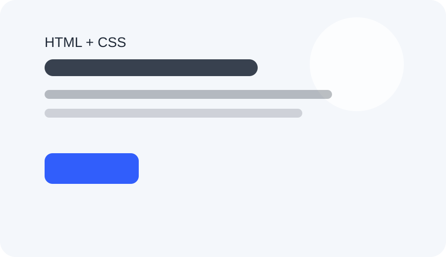

HTML
Структура и семантика документа
Учебная оценка: 8/10
Учебная конференция о создании понятных и доступных веб-интерфейсов. Шесть направлений — от структуры страницы до проверки результата.
Участвовать
Структура и семантика документа
Учебная оценка: 8/10
Стили и адаптивность
Учебная оценка: 9/10
История изменений
Учебная оценка: 7/10
Пользовательский ввод
Учебная оценка: 6/10
Доступность интерфейса
Учебная оценка: 10/10
Исследование DOM и стилей
Учебная оценка: 8/10
Демонстрационное расписание: порядок и время занятий составлены для этой страницы.
| Время | Тема | Содержание |
|---|---|---|
| 10:00 | HTML | Структура и семантика документа |
| 11:00 | CSS | Стили и адаптивность |
| 12:00 | Git | История изменений |
| 13:00 | Forms | Пользовательский ввод |
| 14:00 | Accessibility | Доступность интерфейса |
| 15:00 | DevTools | Исследование DOM и стилей |
Учебная форма: проверьте ввод, данные никуда не отправляются.